| [跳到末尾][返回主页] | |
| SkinTools 学习 | |
| 知识模块 | （以下内容都是基于Mstar NonOS软件架构而言） |
概要： |
|
|
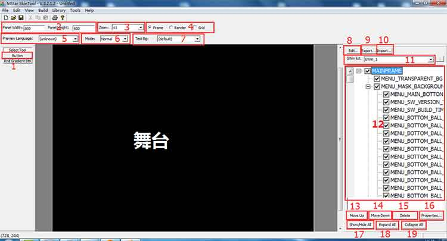 图1 说明: 1.当你在一个控件下想要画一个子项时，需要选中这个选项再画才可以。 2.显示菜单的画布长和宽。 3.可以选择舞台的放大缩小，用于查看的时候。 4.用于切换舞台显示模式，Frame--显示为骨骼框架，Render--显示为实际视图，Grid--显示网格线 5.改变舞台字符显示的语言，一般不用。 6.用于切换控件的状态 Normal、Focus、Disable。用于查看 7.无解，不用。 8.修改舞台的大小。所有的控件必须显示在黑色舞台的里面。否则编译不过。 9.用于导出控件，如果选中的控件有子项，那么会连子项一起导出。 10.用于导入控件。 11.不同 OSD 之间的选择窗口。 12.显示OSD下的控件列表。 13.选中列表中的控件，按下此选项，控件向上移动，即显示时的层次上往下移动一层。 14.选中列表中的控件，按下此选项，控件向下移动，即显示时的层次上往上移动一层。 15.删除控件。 16.打开控件属性窗口。 17.控释控件在舞台中的显示和隐藏。 18.没用过。 19.如果选中的是一个父项，那么点击此按键会收起子项的显示，用于整理显示。 舞台--我们画UI时的工作场地。 |
|
图1中16功能项打开的属性窗口如下（图2） 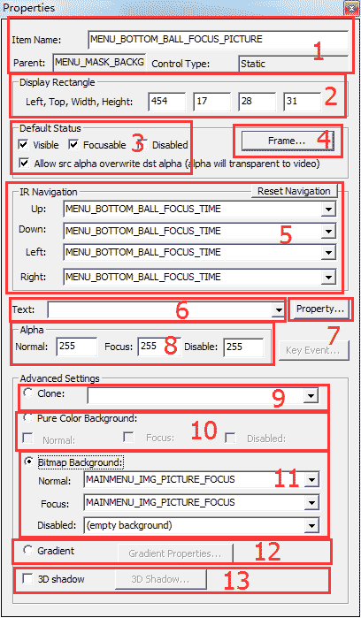 图2 说明： 1.显示当前选中的控件的ID，父项，以及状态，一般为static。 2.用来显示控件的舞台位置和大小（长和宽） 3.用来选择控件可以实现的状态，即是否可见、是否可选，是否可灰显，是否可透明显示。 4.可以打开一个调整控件边框颜色的窗口 5.用来连接当前控件上下左右的关联控件，一般用于光标移动的方向位置。 6.用来选择当前控件中填充的字符 7.用来打开调整字符显示样式的窗口 8.可修改控件在三种状态下的透明度值 9.用来克隆一个控件的属性。只能克隆10、11的属性 10.调整控件的背景填充色，三种状态下的均可调整 11.可以给控件的背景填充图片。 12.可以使控件四角成圆弧装，还可以调整圆弧的弧度。 13.没用过。 |
|
图2中4功能项打开的属性窗口如下（图3） 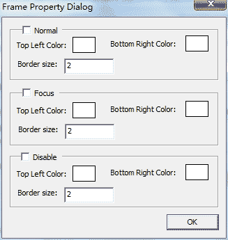 图3 说明： 这个窗口主要用来修改控件边框的颜色和粗细，也是三种状态都可以修改。 Top Left Color -----------------修改左边沿和上边沿颜色 Bottom Right Color ------------修改下边沿和右边沿颜色 Border size ---------------------修改边沿的粗细程度 |
|
图2中7功能项打开的属性窗口如下（图4） 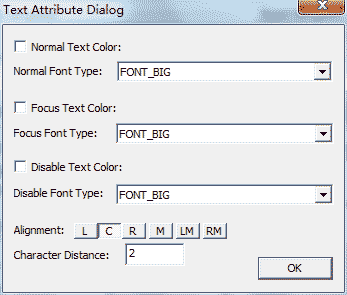 图4 说明： Text Color ---------------修改三种状态下的字符的颜色 Font Type ----------------修改三种状态下的字符的字体大小 Alignment ----------------修改字符在控件中的显示位置 Character Distance -------修改字符的字母间距 |
|
工具栏中的Library中的常用项如下图所示 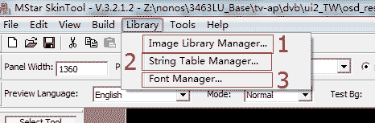 图5 说明： 1.图片库管理 2.字符库管理 3.字体库管理（一般不用，没用过） |
|
图5中的1功能项打开图片管理器如下图6所示 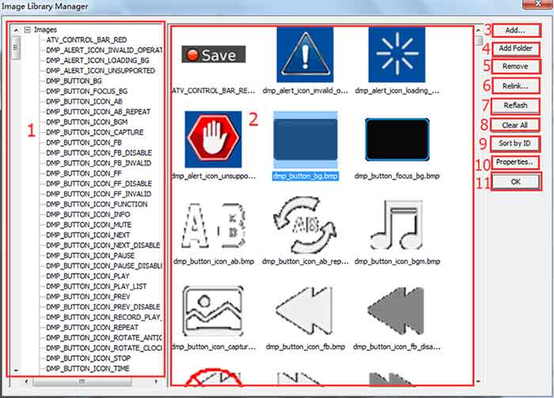 图6 说明： 1.图片的ID list 2.图片预览列表 3.添加图片到图库中 4.添加整个文件夹中的图片 5.删除图片 6. 重新链接图片 7.刷新 8、9.一般不适用，使用后会出问题 10.可以打开编辑图片的属性窗口 11.确定按键 |
|
图5中的2功能项打开字符管理器如下图7所示 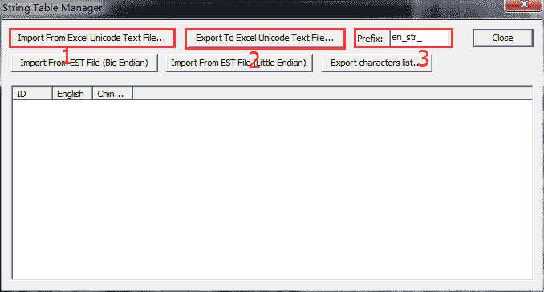 图7 说明： 1.导入字符文件 2.导出字符文件 3.生成的字符ID前缀 |
|
图6中的10功能项打开的属性窗口如下图8所示 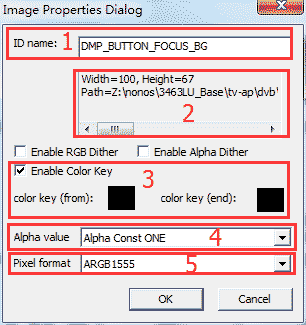 图8 说明： 1.显示当前选中的图片元素的ID名字 2.显示当前选中的图片元素的调用路径 3.可以选择透掉图片的某一种颜色，即在实际的现实中不显示被透掉的颜色 4.选择图片素材是否可以调节透明度 5.图片显示格式 |
|
有时，为了方案的需要，我们会把分辨率为1360x768的UI转换为960x540的UI，此时需要用到以下选项 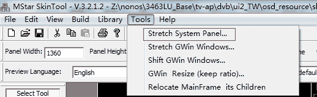 图9 知识点1. 有时候，我们为了满足硬件的配置，需要将UI 从1366缩小为960，或者从960放大到1366，此时会出现有的UI菜单显示花掉的问题，原因是由于这些花掉的OSD黑色背景框的宽度不能被8整除导致的,只需修改EDIT选项中将背景框修改为被8整除的数即可。 |
|
当画完之后并保存，此时需要编译才能生成我们软件可以调用的文件，编译的按钮如下图所示 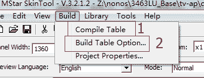 图10 说明： 1.编译Skintool 2.修改编译生成文件的路径 |
|
|
通过学习SkinTool,已经对OSD有了一定的了解，但是还存在很多疑惑。以下是作业报告： 1.在skintool软件工具中右边的GWin list窗口中选中MAINFRAME-> MENU_OPTION_PAGE -> MENU_OPTION_PAGE_LIST 2.点击左边的Button,然后用鼠标在黑色区域画出菜单并命名为MENU_OPTION_SILENCE，再在此菜单下再新建MENU_OPTION_SILENCE_TEXT和MENU_OPTION_SILENCE_OPTION，如下图所示： 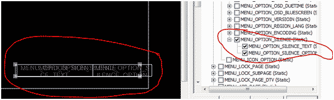 3.然后用Excel修改从SkinTool导出的字符表.txt文件，添加两行字符，并导入skintool，分别设置好属性。 4.保存并编译即可。 5. 在Source Insight中找到HWND_MENU_OPTION_SILENCE并设置如下： // 203 = HWND_MENU_OPTION_SILENCE_TEXT // 204 = HWND_MENU_OPTION_SILENCE_OPTION 6.然后进入_MENU_OPTION_SILENCE_KEY并设置如下： 7.然后如下： 8.接着找到EN_EXE_ONOFF_OPTION设置按键动作： MApp_ZUI_API_InvalidateWindow(HWND_MENU_OPTION_SILENCE_OPTION); 9.然后在SecureCRT中编译就可以了。 |
|
OSD实践二——制作单独菜单 1. 在skintool中画出新建的页面如下： 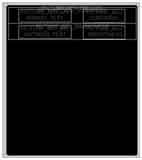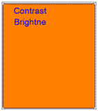 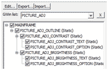 这里需要注意的问题： b.菜单中各个选项的上下左右调节关系一定要设置准确，由于我在做背光时直接复制了对比度的属性 ，导致在按键时光标乱跳，花了好长时间才发现。 2.在目录XXCode\tv-ap\dvb\ui2_XX和ui2_XX\include下添加自己的.c、.h文件，（我复制了audiovolume的模板），然后将它们导入Source Insight中，修改其中的函数名字为自己的名字。接着在XXCode\project\build中打开文件FILES_R2_XXXMM.mk在UI FILE下修改如下： 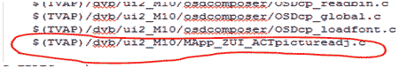 3.接着用对比工具在目录XXCode\tv-ap\dvb\ui2_XX\resXXX下分别查看文OSDTbl_ATV_c.inl和文件OSDTbl_c.inl、OSDWndDrawStyleTbl_ATV_c.inl和OSDWndDrawStyleTbl_c.inl、OSDWndPosTbl_ATV_c.inl和OSDWndPosTbl_c.inl 在目录 XXCode\tv-ap\dvb\ui2_XX\resXXX\include下对比文件OSDTbl_ATV_h.inl和OSDTbl_h.inl 在skintool编译后会生成一些代码到以上文件中，将和自己有关的东西放到两边，使两边都一样。 4.接下来就是改程序了 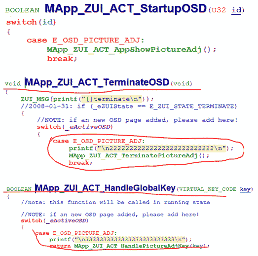 5.搜索KEY_3D在mapp_tv.c中改写为 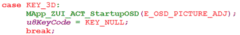 6.接着在自己的.c文件中将ID改为自己的菜单名：（添加头文件） 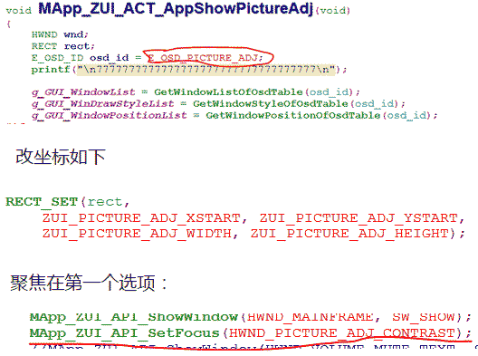 此时，自己制作的菜单就可以显示了。 7.然后来实现功能： 并添加按键动作如下： static KEYEVENT _ZUI_TBLSEG _MENU_PICTURE_ADJ_BRIGHTNESS_KEY[] = // Window List WINDOWDATA _MP_TBLSEG _GUI_WindowList_Zui_Picture_Adj[] = // 1 = HWND_PICTURE_ADJ_OUTLINE // 2 = HWND_PICTURE_ADJ_CONTRAST // 3 = HWND_PICTURE_ADJ_CONTRAST_TEXT // 4 = HWND_PICTURE_ADJ_CONTRAST_OPTION // 5 = HWND_PICTURE_ADJ_BRIGHTNESS // 6 = HWND_PICTURE_ADJ_BRIGHTNESS_TEXT // 7 = HWND_PICTURE_ADJ_BRIGHTNESS_OPTION 8.接着在自己的.c文件中 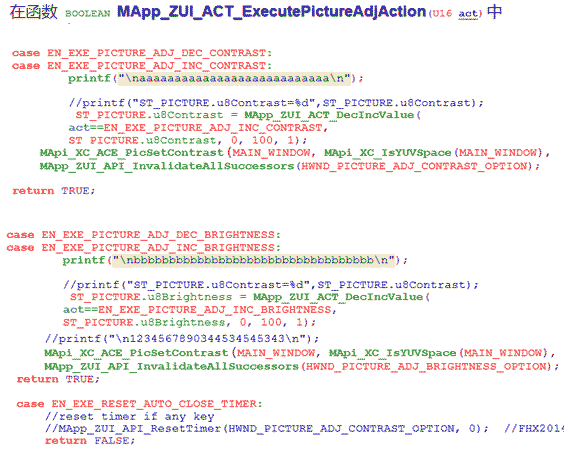 这样就完成了添加一个OSD页。
|
|
| [返回主页][返回顶部] | |
| ※※※※※※※※※※※※※※※【札 记 分 享】※※※※※※※※※※※※※※※ | |
| 为中华崛起而读书 | |
| 本想沉溺于莲花深处，不料翻滚于水物之间 |
| 更新日期 2018年2月8日 星期四 11:59 |
| 欢迎访问官网 www.fy2000.org 蓝天的精灵工作室 |